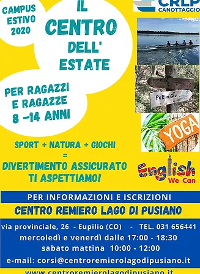
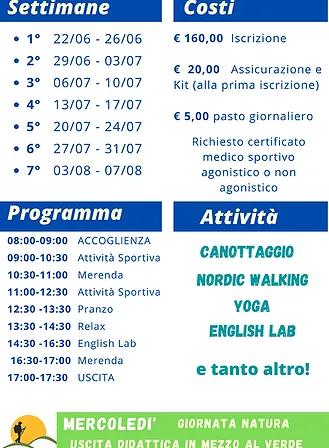

CENTRO ESTIVO
“Il Centro dell’Estate”, è una progetto studiato, organizzato e gestito dal
Centro Remiro Lago di Pusiano.
Il Centro Remiero ha fra le sue finalità istituzionali quella di diffondere
fra i giovani del territorio la pratica del canottaggio. Convinti
dell’importante ruolo sociale svolto dallo sport, ci siamo adoperati per
mettere in campo l’organizzazione di questo centro estivo orientato allo
sport e al territorio con una particolare attenzione all’aspetto della
socialità che i giovani devono riconquistare dopo il prolungato
lockdown.
Barbara Sala è la responsabile del progetto.
La struttura del Centro remiero si compone di ampie aree sia interne
che esterne. È possibile pertanto il distanziamento richiesto e la
possibilità di organizzare diverse aree per le attività tenendo separati e
distanziati piccoli gruppi conformemente alle Linee Guida emanate dal
Ministero.
Al fine di dare anche un senso logico sia alla parte sportiva che quella
sociale culturale, abbiamo predisposto un programma ricco di
interessanti attività. Per poter fare questo abbiamo dovuto però ridurre
la fascia d’età. Il centro estivo si rivolge infatti a ragazze e ragazzi dagli
8 ai 14 anni (anno di nascita dal 2006 al 2012).
5 giorni la settimana, dal Lunedì al Venerdì: dalle ore 7:30 alle ore
17:30, dal lunedì al venerdì.

